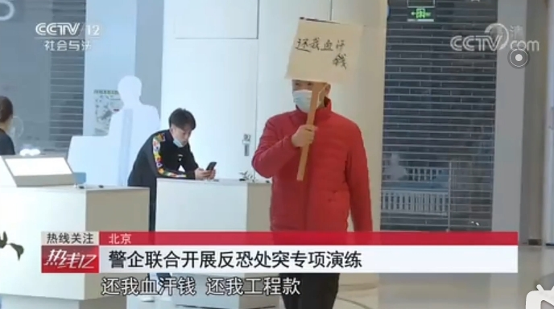
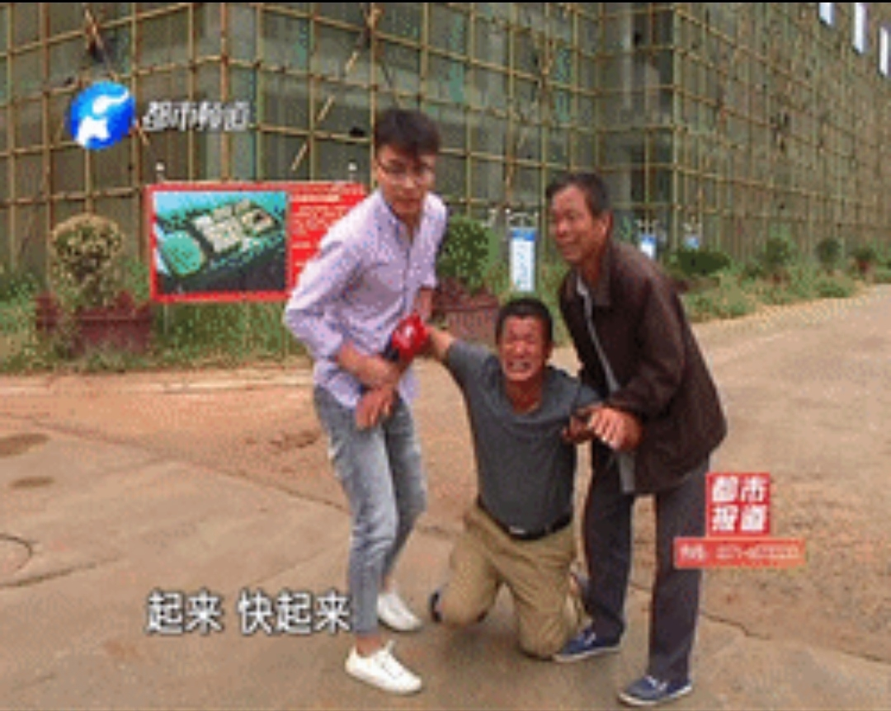
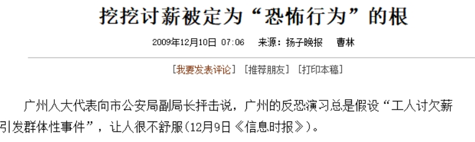
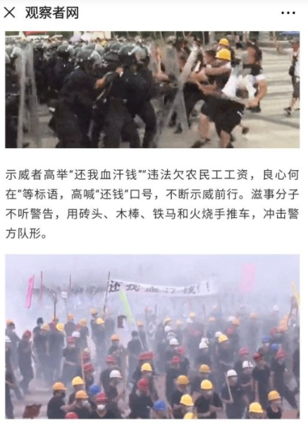
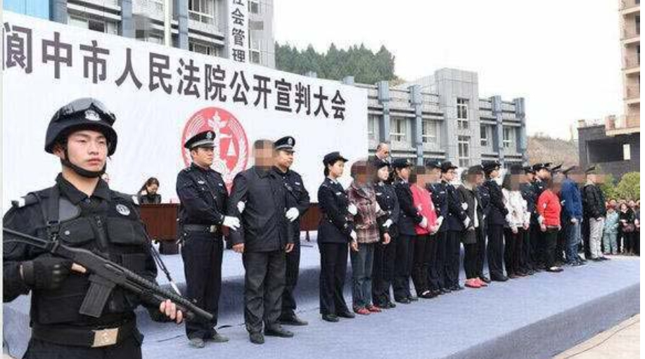

最近上网浏览视频时，发现了一则奇葩新闻，今年的国家安全教育日（4月15日）北京朝阳区警方组织了一场反抗演练，旨在增强维护国家安全的能力，提高人们的国家安全意识。
是谁威胁了我们的国家安全呢？
一个手无寸铁的举着“还我血汗钱”的农民工。
毫不意外，一群保安和几位英勇的警察轻而易举的制服了这位“恐怖分子”。
曾经，我以为能够威胁国家安全的是美帝抵近我国沿海的侦察机和航空母舰以及他们的走狗；
曾经，我以为能够威胁国家安全的是新疆西藏香港的分裂势力；
曾经，我以为能够威胁国家安全的是东南沿海的那个还未回归的岛屿......
万万没想到，手无寸铁的农民工居然也成了威胁国家安全的“恐怖分子”。 
我在这个国家生活二十多年了，感受过各种威胁，却从来没有感受到农民工能威胁到国家安全。
在我的印象中，农民工是绝对的弱势群体。我的朋友和亲戚中就有农民工，从来都是有权有势的人欺负他们，没见他们敢大声说过一句话。
如果是一两个人，被拖欠工资后大部分情况只能认栽，或者爬上高楼和塔吊喊冤，更有甚者，用一桶汽油结束这委屈窝囊的一生。如果人多，还可以仗着“人多势众”拉个横幅，胆子小一点的，只能跪求青天、跪求好心人给他们做主，替他们主持公道了。
（就这股窝囊劲儿，也能威胁国家安全？）
谁能告诉我，连自己的血汗钱都要不到的农民工，如何能威胁到我们堂堂大国的安全呢？
我上网查了一下，早在2009年，广州就开展过针对讨薪农民工的反恐演练，引起舆论震动，甚至部分人大代表和广东省总工会都发出了质疑。 
在2019年8月，香港问题正是如火如荼的时候，深圳举行了有1.2万人参与的海陆空三栖反抗演习。
然而，我们没有想到的是，假想对象再一次打出了“还我血汗钱”、“违法欠农民工工资，良心何在”、“你住高楼大厦，我却肚饥无食”的标语口号。 
（观察者网关于深圳反恐演习的报道）
农民工本来就是弱势群体，但凡一个有良知的人看到这样的口号，想到的应该都是赶紧去解决农民工的诉求，而不是去解决提出问题的人吧！
可是，我们偏偏看到了阆中农民工讨薪被公审，河南农民工周秀云在太原讨薪被打死，还有不少人背负上了“恶意讨薪”的罪名！ 
请问，讨薪怎么还有恶意和善意呢？
请问还有善意欠薪这一说吗？
在大众的印象里，能威胁到我们国家安全的，难道不一直是帝国主义和分裂势力吗？
我们的各种军事演习，难道不应该将假想敌设置成真正的敌人吗？
当我翻开宪法的第一章总纲时，第一句话映入眼帘：“中华人民共和国是工人阶级领导的、以工农联盟为基础的人民民主专政的社会主义国家。”，我不禁陷入了迷茫......
我们的工人农民日复一日的从事着漫长而艰辛的体力或是脑力劳动，创造着整个社会的财富，创造着巨大的生产力，然而所得到的那点仅够糊口的微薄工资都要被拖欠。
天价的房价早已使得买房对他们来说成为不可能，当整个社会都在宣扬温情脉脉的家庭伦理，农民工们只能背井离乡，家人相隔千里，难以团聚，一起打工的夫妻也只能和其他工友共住简陋的工棚。奴隶般的生活，一旦遭受病痛等灾难的打击，就因难以承受的医疗费用而难以为继。教育的资源按收入来分配日益成为现实，因而他们唯一寄予希望的上升途径也已封死。
工业的建设为社会带来了完善的设施，却为他们带来了精神和肉体的畸形；庞大的工程为城市创造了宏伟的建筑和宽阔的道路，却为他们留下了拥挤的贫民窟和肮脏的小道；科技的发展创造了巨大的生产力，却让他们依旧停留于精神和物质的严重贫乏。
为中国的发展做出巨大贡献的他们，丧失了做人的起码尊严。他们被侮辱，被谩骂，懒惰、没素质、又脏又臭成了他们的身份标签。既然资本、金钱成了整个社会的价值衡量标准，那么作为资本附属物的他们，被剥削的一无所有的他们，自然成为了整个社会最没有尊严、最没有价值的人。
现在，他们又多了一顶“恐怖分子”的帽子，仅仅因为他们讨要自己的合法酬劳，这种在任何国家、任何社会都无可厚非的要求。
无论是从农民的角度还是从工人的角度，都是我们社会主义国家主人的农民工，仅仅因为维护自身权益，就成为了暴力机器反恐枪口下的敌人。手无寸铁的他们、国家主人的他们、受苦受难的他们，就这样被定义成了威胁到我们国家安全的群体，我实属无法理解这样荒诞的现实。